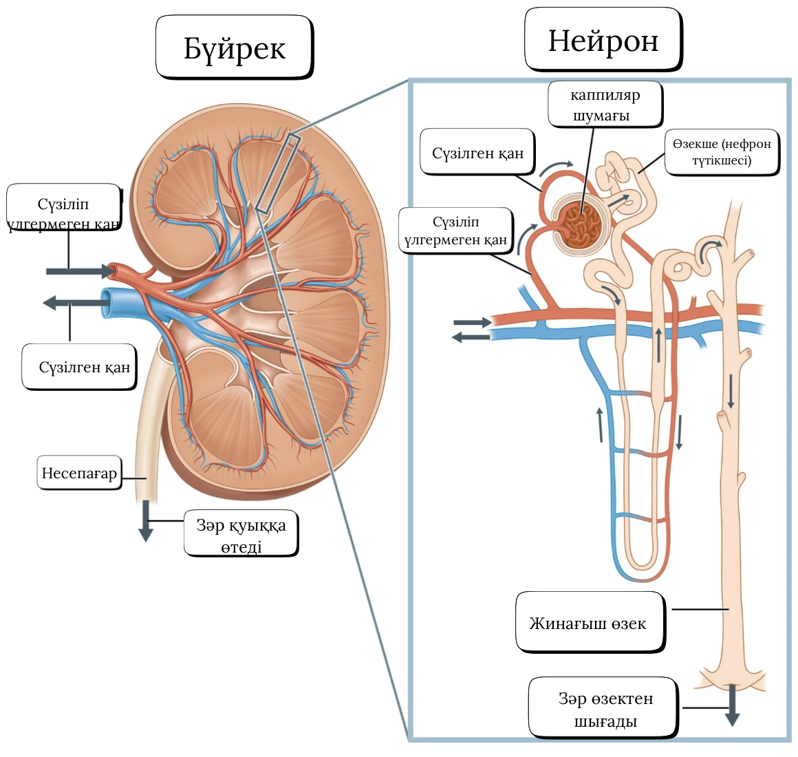
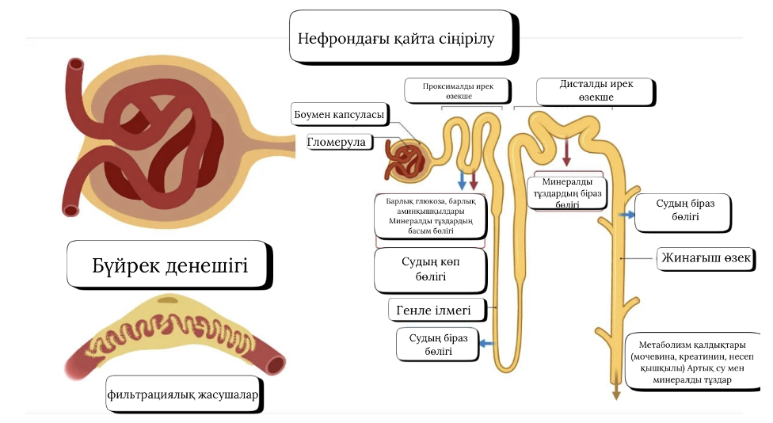
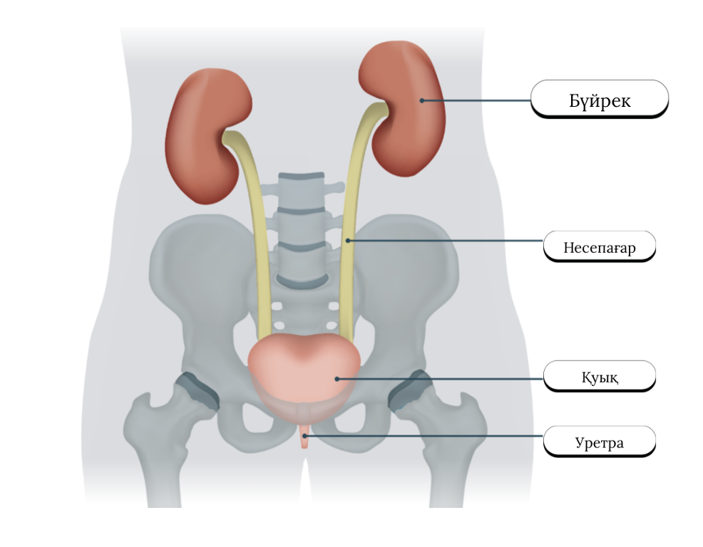

Дескриптор
Әр дұрыс сәйкестендіру — 0,5 ұпай. Барлығы — 2 ұпай.
АБСОРБЦИЯ ЖӘНЕ РЕАБСОРБЦИЯ. ЗӘРДІҢ ТҮЗІЛУІ
Адам ағзасында зәр түзілуі бүйректегі нефрондарда жүреді. Әр бүйректе шамамен 1–1,2 миллион нефрон бар. Нефрон — сұйықтықты сүзу, зиянды заттарды шығару және пайдалы заттарды қанға қайта жіберу қызметін атқаратын құрылымдық-функциялық бірлік.
Зәрдің түзілуі 3 негізгі кезеңнен тұрады:
- Фильтрация (сүзілу)
- Реабсорбция (қайта сіңірілу)
- Секреция (бөліну)
Сонымен қатар, абсорбция — осы үдерістерде судың және заттардың қозғалысын сипаттайтын жалпы құбылыс.
НЕФРОННЫҢ ҚҰРЫЛЫСЫ
Вставь КАРТИНКА НЕФРОННЫҢ ҚҰРЫЛЫСЫ.
Нефрон мына бөліктерден тұрады:
| Нефрон бөлігі | Қызметі |
|---|---|
| Боумен капсуласы | Каппиляр шумағынан сүзіліп шыққан сұйықтықты қабылдайды; алғашқы (1-реттік) зәр түзіледі |
| Каппиляр шумағы | Жоғары қысыммен қанды сүзеді; су, глюкоза, аминқышқылдары мен иондар өтеді; белоктар мен жасушалар өтпейді |
| Проксималды ирек өзекше | Реабсорбцияның 70–80%-ы жүреді; глюкоза, аминқышқылдары, су, Na⁺, Cl⁻ қайта сіңеді. |
| Генле ілмегі (түсетін бөлік) | Су қайта сіңеді; осмостық градиент түзіледі |
| Генле ілмегі (шығатын бөлік) | Суға өткізбейді; Na⁺ және Cl⁻ белсенді түрде қайта өтеді; зәр қоюланады |
| Дисталды ирек өзекше | Иондық құрамды гормондар арқылы реттейді (альдостерон, АДГ); қышқыл–сілті тепе-теңдігін реттейді |
| Жинағыш өзек | Соңғы зәр түзіледі; судың қайта сіңірілуі жалғасады; АДГ әсерінен зәр қоюланады |
🟪 1-КЕЗЕҢ: ФИЛЬТРАЦИЯ (СҮЗІЛУ)
Вставь КАРТИНКА 1-КЕЗЕҢ.
Фильтрация — зәр түзілуінің алғашқы кезеңі. Бұл процесс каппиляр шумағы + Боумен капсуласында жүреді.
Фильтрацияның мәні: Қан жоғары қысыммен гломерулаға келіп, оның капиллярларынан су және ұсақ молекулалар сүзіліп шығады.
Сүзіліп өтетін заттар:
- су
- глюкоза
- аминқышқылдары
- Na⁺, Cl⁻, K⁺ иондары
- мочевина
СҮЗІЛМЕЙТІН заттар:
- белоктар
- қан жасушалары
Осы кезеңде алғашқы (1-реттік) зәр түзіледі. Оның көлемі өте үлкен: күн сайын шамамен 150–180 литр.
🟪 2-КЕЗЕҢ: РЕАБСОРБЦИЯ (ҚАЙТА СІҢІРІЛУ)
Вставь КАРТИНКА 2-КЕЗЕҢ.

Реабсорбция — алғашқы зәрден пайдалы заттардың қанға қайта өтуі. Бұл процесс нефронның барлық бөлімдерінде өтеді, бірақ ең қарқындысы — проксималды өзекшеде.
Қайта сіңірілетін заттар:
- 100% глюкоза
- 100% аминқышқылдары
- 65–70% су
- Na⁺, K⁺, Ca²⁺, Cl⁻
- Витаминдер
Реабсорбцияның маңызы:
- Дене үшін маңызды заттарды жоғалтпайды
- Су теңдігін реттейді
- Иондық тепе-теңдікті ұстайды
Нәтиже: Алғашқы зәр көлемі бірнеше есе азаяды (150 литр → 1,5 литр).
🟪 3-КЕЗЕҢ: СЕКРЕЦИЯ (БӨЛІНУ)
Вставь 3-КЕЗЕҢ.

Секреция — қаннан нефрон түтікшесіне артық және зиянды заттардың шығарылуы.
Бөлінетін заттар:
- аммиак
- артық H⁺ және K⁺ иондары
- дәрі қалдықтары
- токсиндер
Маңызы:
- Қанның қышқыл-сілті тепе-теңдігін реттейді
- Ағзаны уланудан сақтайды
- Қорытынды зәрдің соңғы құрамын қалыптастырады
🟩 ЗӘРДІҢ ҚОРЫТЫНДЫ ЖОЛЫ
Вставь ЗӘРДІҢ ҚОРЫТЫНДЫ ЖОЛЫ.
Қорытынды зәр: жинағыш өзек → бүйрек тостағаншасы → несепағар → қуық → уретра арқылы сыртқа шығарылады.
Тапсырма 2 — толтыру және есеп
1-тапсырма: Бос орындарды толтыр
Сөздер: Боумен капсуласы, қайта сіңіру, проксималды ирек өзекше, аммиак H⁺ K⁺, су глюкоза аминқышқылдары иондар, жасуша қабырғасы арқылы өту
- 1-реттік зәр ____________ түзіледі.
- Реабсорбция - ___________ процесі.
- Глюкоза ____________-да қайта сіңеді.
- Секреция кезінде түтікшеге ______________________ өтеді.
- Алғашқы зәрдің құрамында ______________________ бар.
- Абсорбция — заттардың ____________________ өтуі.
2-тапсырма: Кестені толтыру
| Процесс | Қай жерде? | Нәтижесі |
|---|---|---|
| Фильтрация | ||
| Реабсорбция | ||
| Секреция |
3-тапсырма: PISA есепі
Алғашқы зәр: 180 л
Проксималды ирек өзекшеде — 70%, Генле — 20%, Дисталды+жинағыш — 8% қайта сіңеді. Соңғы көлем 1,5 л.
- Проксималды өзекшеде қанша литр су қайта сіңіріледі?
- Генле ілмегінде қайта сіңірілген судың мөлшері?
- Дисталды + жинағыш кейін қалатын су қанша литр?
Тест (3 минут)
Таймер: 03:00
Үй тапсырмасы
Адам бүйрегінде тәулігіне 180 литр алғашқы зәр түзіледі. Проксималды ирек өзекшеде оның 40% қайта сіңіріледі. Проксималды өзекшеде қанша литр су қайта сіңіріледі? (литрмен жазыңыз)